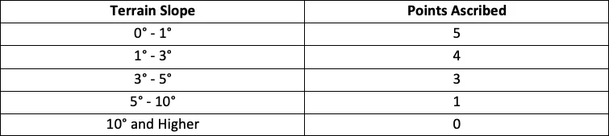
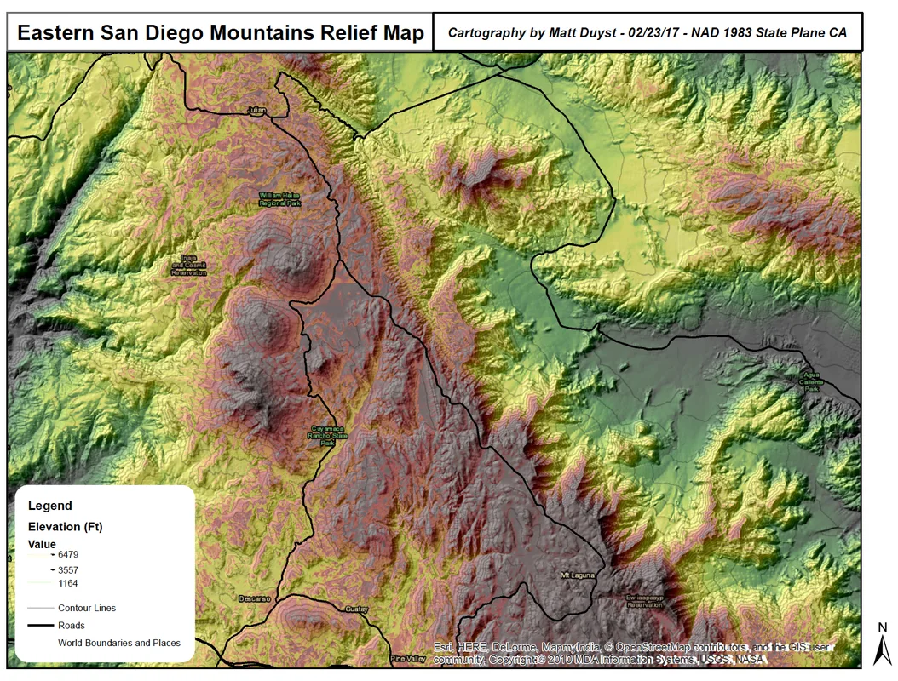
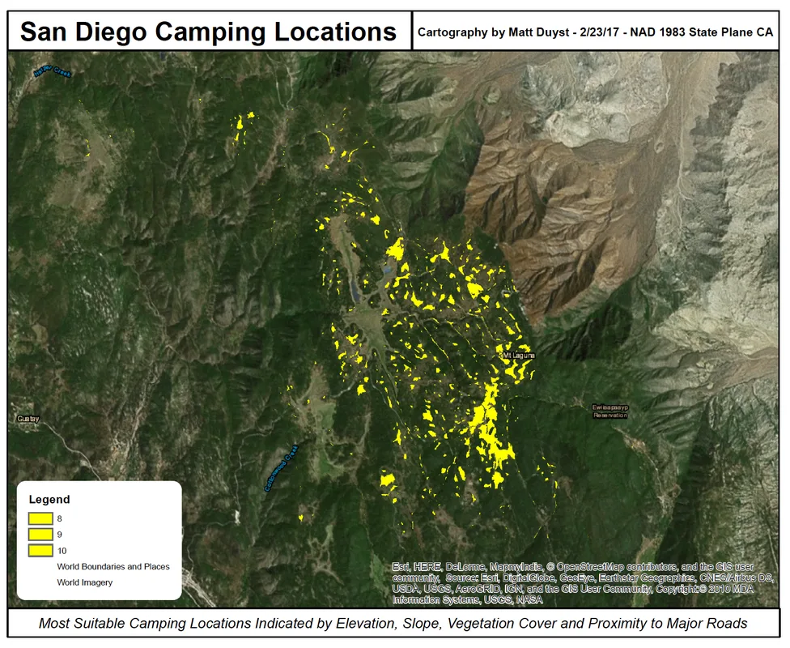

UCLA coursework, 2014 to 2018
Site Suitability Analysis: San Diego Elevation Mappings for a Summer Campground
Abstract:
This project delves into the complexities of site suitability analyses, through the acquisition of a DEM (10m resolution) and ground cover vegetation for the highest mountain range in Eastern San Diego County - Laguna and Cuyamaca Mountains. Several rasters were used to systematically identify the most optimal camping locations, and then reclassified using map algebra tools to meet the requested requirements for campsite locations (listed below). The process of selecting a campground site was facilitated through the development of a terrain-based scoring index (out of 10 points), wherein locations receiving higher scores are better suited for use as development areas of campgrounds.
Improvements on the produced maps could be made on representation of the legend - the resolution of the export process compromises the understanding of elevation in the first map. The legend for the second map (San Diego Camping Locations) only needs to include a single symbol representing all camping locations that meet the required parameters.
Methods:
The parameters set for requested campsite locations were:
- An elevation equal or greater than 4,000 feet above sea level to ensure summer temperatures will be cool enough for comfortable camping.
- Within two miles of an existing road.
- Vegetation cover with one of the following classifications: Coniferous Forest, Oak Woodlands, or Mixed Forests.
Rasters were reclassified using the following point values:


Results:

